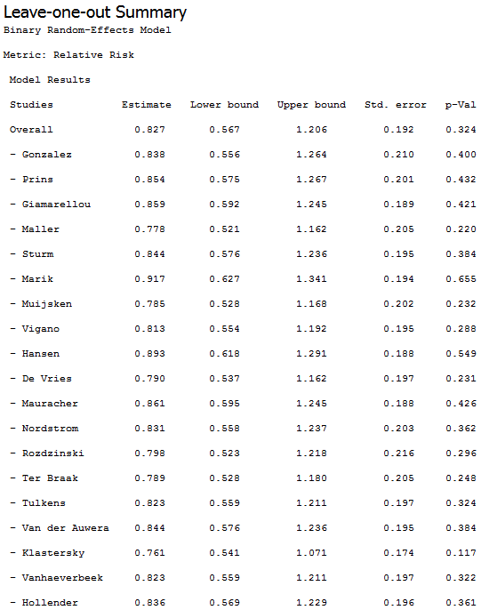
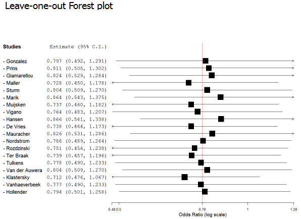

Leave-one-out meta-analysis involves performing a meta analysis on each subset of the studies obtained by leaving out exactly one study. This shows how each individual study affects the overall estimate of the rest of the studies.
This section provides an example that shows how to perform a cumlative meta-analysis. To run the example, do the following steps:
This displays the cumulative summary and plot, as shown below.
  | Cumulative Meta-Analysis | SubgroupMeta-Analysis | |